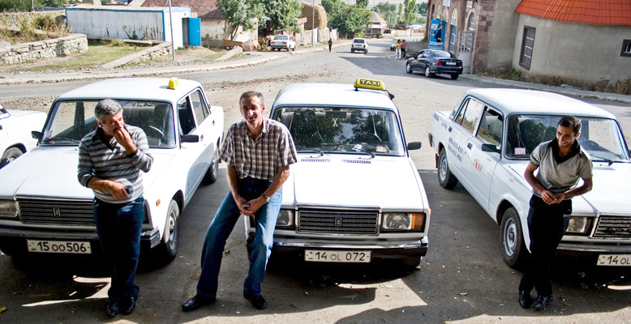
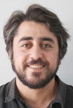

ПРОФЕССИЯ - ГРАЖДАНИН АРМЕНИИ. ЧЕЛОВЕК ОБО ВСЕМ. ВОПРОСЫ НА ВСЕ ОТВЕТЫ
Любые
совпадения
лиц, имен
и событий друг с другом
и с реальностью являются случайными.
и событий друг с другом
и с реальностью являются случайными.

Юрий Манвелян
- Я вообще-то не шофер. Живу в Москве. Приехал на пару месяцев, решил не сидеть без работы. Друг владеет таксопарком. Дал мне машину. Я чисто на себя работаю. Всего несколько часов вожу, а потом отдыхать. Диспетчер не смеет меня теребить. Но оставаться здесь не собираюсь. В России тоже есть проблемы, но закон действует, у меня там бизнес.
Эта стандартная тирада ереванских таксистов, которую они выдают буквально слово в слово. Если им за пятьдесят, то они добавляют невероятную историю о том, как с друзьями в советское время как-то решили поесть пельмени. «А в Москве, у Белорусского вокзала (откуда вам молодым знать), отличная пельменная. Билет на самолет тогда стоил 40 рублей. Мы днем полетели, попировали, а поздно вечером вернулись. Я зашел домой, а отец говорит, где это вы лоботрясы шляетесь? Зачем в Москву летали? Я опешил. Спрашиваю, откуда он узнал. Оказалось, там, у вокзала, для программы «Время» репортаж снимали, и мы попали в кадр. Тогда все смотрели «Время».
Если таксист моложе, то рассказывает, как его «подцепила богатая и красивая в самом соку вдова какого-то скрытого олигарха», которая постоянно докучает таксисту, возит его везде, постоянно отдается ему в самых неожиданных местах, угощает в роскошных ресторанах и гостиницах - сходит по нему с ума. Говорят, в основе этих мифов лежат чьи-то реальные истории.
С Арманом я познакомился в регистратуре роддома больницы «Эребуни». Я, не как обычно, публично выговаривал сотрудникам больницы, которые под предлогом стерильности не пропускали новоиспеченных пап к женам и детям, но стелились и зажигали зеленый свет подвыпившим блатным ребятам, совавшим в карманы белых халатов деньги и поднимавшимся к роженицам с цветами и конфетами. Я что-то говорил о Гиппократе, рабстве и Конституции. Врачихи почти не сдерживали истерики и грозили позвать полицию. За них вступились пьяные и блатные, которых заставили вместе с цветами покинуть родильное отделение, за меня - пока незнакомый Арман. Нас не побили.
Оказалось, что Арман даже не в роддом пришел - в том же блоке располагался уролог. Арман на машине с шашечками довез меня до дома. Предупредил, что не таксист и до конца года вернется в Москву. Он громко выговаривал по телефону кому-то, кто наградила его венерическим букетом, который она в свою очередь получила от мужа-гастарбайтера. Она успокоила Армана тем, что сдерет деньги на их лечение с супруга. Мы обменялись с таксистом телефонами, договорились попить пива.
Арман позвонил в тот же день, сказал, что проезжает там, где меня высадил. Я пригласил его в редакцию, на кухню. Он принес пива и, проверяя мою реакцию, достал из пакета чекушку «на всякий». Я не сопротивлялся.
- Я думал, ты художник, - неожиданно выдал Арман после небольшой экскурсии по редакции.
- Не люблю парикмахеров, - сказал я.
- Мне нравятся немного свихнутые люди, - осмелел Арман. - Жаль, что ты не художник. Я хотел у тебя денег попросить. В долг.
- Можешь и теперь просить – я все равно не дам.
- Уже не надо. Откуда у журналиста могут быть деньги.
Профессиональных тайн я не стал выдавать, но прежде, чем пойти за добавкой, успел спросить, что Арман думает о Карабахской проблеме.
- Статью писать будешь?
- Нет, - соврал я.
- Карабахы мерна, байц туркери дзерна (кричалка ереванских митингов конца 80-х - «Карабах наш, но в руках у турок»).
Арману 26. Живет с мамой Алвард в приватизированных двух комнатах общежития бывшего Камвольного комбината, где вплоть до 90-х работала мать. Дома есть компьютер с Интернетом для «одноклассников», через который Арман нашел свой «букет», и скайпом для мама-родственники.
На следующий раз Арман пригласил меня на яичницу с помидорами и окрошку. Я принес пива и конфет. С последним не угадал. Тетя Алвард уже 8 лет работает на кондитерской фабрике «Гранд Кенди», получает 60 тысяч драмов в месяц (меньше 150 долларов). Работает с 08:00 до 18:00. За опоздание удерживают с зарплаты 10 тысяч. Три опоздания за месяц - увольнение. Рабочую одежду стирают дома. На выходе сотрудников периодически обыскивают.
С коллегами практикуют «лотерею», благодаря которой рабочие могут иногда позволить себе «большие покупки». Человек 10 с каждой зарплаты скидываются по 20 тыс. и отдают 180 тыс. одному из коллег - и так по очереди каждые 10 месяцев каждому достается значительная прибавка к жалованью.
Год назад Арман вернулся из Москвы, где работал охранником на складе. Потом жил в Подмосковье у богатой, ревнивой соотечественницы, которой достался бизнес мужа. Работу пришлось бросить - денег становилось больше, свободы поубавилось. Устав от скандалов, Арман уходит от богачки. Та натравливает на него крутых кавказцев. На них находятся не менее компетентные земляки, которые объясняют, что «слова женщины не могут быть основанием для недоразумений между мужчинами». Тогда все обошлось.
Арман вернулся в Ереван, богатая бизнесменша - за ним. Устроила скандал, «опозорила» перед соседями и вернулась, взяв с любимого клятву, что он вернется до конца года.
На такси Арман уже месяца 4. Работодатель требует по 10 тыс. в день. Приходилось сидеть за рулем по 12-16 часов в сутки, чтобы в среднем иметь не менее 5 тыс. себе. Потом Арман поменял условия на сутки за рулем - сутки отдыхаешь. Если доплачивать диспетчеру, то та будет отдавать «хорошие вызовы» тебе. За горючее – газ – также платит водитель.
- Я точно уеду. До зимы не вытерплю. Уже сейчас невыносимо. Зимой хозяин сначала не обращает внимание на недоплаты, праздники и выходные. Ну, если я за весь день 7-8 тысяч заработал, должен же я что-нибудь домой отнести. Они сначала не предупреждают, а потом оказывается, что у тебя полумиллионный долг, и ты их раб на годы. Многие оказались в таком положении - почти все, кто больше года работает.
Такси и маршрутки - самый встречаемый транспорт в Ереване, столица буквально кишит ими. Этот бизнес в Армении контролируют крупные чиновники, сотрудники силовых органов и депутаты. Их денежный оборот находится в тени. Чеков пассажирам не выдают, сами шоферы зачастую не зарегистрированы, стаж и пенсия за годы кручения баранки не прибавляются, выходных и отпусков у них не бывает. Проезд на маршрутке внутри города стоит 100 драмов (25 центов), как и километр проезда на такси, до 5 км - фиксированная плата 600 драмов.
Владельцы такси-сервисов изощряются в названиях своих фирм, которые находят отражение на автомобилях: такси «Давай до свидания», «007», «БТР», «Ну, погоди!», «Але, гараж» и так далее. Машины таксопарка, который контролирует семья первого президента Армении, лидера оппозиции Левона Тер-Петросяна называется «ВИП», такси бывшего главы Дорожной полиции Армении, осужденного за хищения в крупных размерах и злоупотребления должностю, носят название «Ангел».
У Армана нет водительских прав. Если тормозят, то он набирает директора, который работает на владельца такси-сервиса - высокопоставленного полицейского.
Для получения прав, ему нужна бумажка их нарко- и псих-диспансера, которую Арману не выдают, так как у него была отсрочка от армии, в которую его все-таки забрали. «Если я псих, то как мне разрешили служить, если нет, то разрешите водить машину», - негодует бесправный Арман.
В 18 лет он по примеру многих сверстников провалил медкомисиию в военкомате, став косить под душевнобольного. Их забрали в клинику, где до генеральной медкомисиии надо было продержаться некоторое время - до 45 дней, если без знакомств и денег. Все это время надо было не выходить из образа. Некоторые постоянно писались под себя, более солидные предпочитали резать вены. Арман выбрал второй путь.
- Я говорил врачам глупости, днями молчал, научился резать руки до крови, не задевая вен, но на меня не обращали внимания. Там были такие корифеи: они резали не поперек, а вдоль руки. Делали бритвой надрезы и доставали продольные куски кожи с мясом.
Самое страшное начиналось ночью, потому что с нами в общей палате были и настоящие буйные. Они прыгали на спящих, испражнялись на них, могли сделать все, что угодно. Мы боялись уснуть и поэтому весь день ходили, как настоящие зомби. В комнатах не убирались. Санитары обращали внимание, только если кто-то терял сознание от потери крови. Как-то зашел главврач и объявил нам: «Быть мне сыном шлюхи, если не освобожу от армии того, кто прямо сейчас на моих глазах заработает себе на голове пятисантиметровый шрам».
Мы реально сходили с ума. Ребята уже не общались друг с другом, даже в отсутствие врачей не могли сдерживать ужимки и тики. Те, кто писались, уже не могли остановиться. Я решил пойти в армию.
Арман отслужил в тыловом полку за 300 километров от столицы. Проблем с солдатами у него не было, он их «мягко организовывал». Офицерам шустрый ереванец тоже нравился.
Самый запоминающийся случай в армии с Арманом произошел в 2008 году:
- Я тогда второй год служил. В феврале наш распорядок резко изменился, и мы, наравне с молодыми, в день три раза тренировали какие-то новые приемы на плацу. Делились на две группы и отрабатывали ближний бой с прикладами и штык-ножами, учились противостоять толпе, правильно окружать, зажимать и обезвреживать людей. Говорили, из нас хотят сделать полк специального назначения и отправить на первую линию. Через неделю нас построили перед каким-то шишками из генштаба. Те рассказали, что в Ереване полный беспредел: все преступники, наркоманы и бомжи объединились и бунтуют на улицах, отлавливают простых солдат, издеваются над ними, избивают, даже женщины плюют солдатам в лицо. Приказали всем, кто из Еревана, сделать несколько шагов назад. Остальных забрали. Я тоже поехал. Никого не регистрировали, а наши офицеры не обратили внимание.
В Ереване были танки, нас отправили стоять вокруг оперы. Люди не нападали, старушки, правда, ругались, но только в ментов, даже на офицеров не обращали внимания. Потом пришла мама и все рассказала про 1 марта.
Политикой Арман не интересуется. На новости натыкается, слушая радио в машине и по ссылкам некоторых друзей из соцсетей. На последние парламентские выборы не пошел, хотя тетя Алвард успела насобирать взяток, в том числе и за сына, с республиканцев, «Процветающей Армении», дашнаков и партии «Оринац еркир» («Страна закона»). На митинги мать и сын не ходят - некогда и «никто не предлагает».
Свое видение развития Армении тетя Алвард формулирует так: «Надо кого-нибудь извне попросить править нами. Армяне армянами управлять никогда не могли». Версия Армана: «Если бы не мама, перестрелял бы всех». Мама: «Перестань рассуждать, как ишак». Сын: «Уезжать надо, устроится и маму забрать, а потом наведываться в Армению по отпускам, чтобы погулять и уехать. Поэтому ахпары (западные армяне и их потомки - авт.) так любят родину. Я тоже хочу любить Армению».
О причинах нерешенности Карабахского конфликта мы стали говорить примерно через месяц знакомства. К этому времени мы успели стать крепкими собутыльниками. Я познакомился с его окружением. В основном это были ребята с района, друзья детства, одноклассники. С коллегами по таксопарку Арман не общается. Пьет он до победного, в перерывах не отказывается от пива. Даже выпившим выслушивает всех до конца, но потом не дает себя перебивать. Новость о том, что я буду о нем писать, воспринял спокойно, только попросил не использовать фото, изменить фамилию, не упоминать работодателя и воинскую часть. Окончательный вариант текста не потребовал.
Пьет он почти каждый день. При этом заметно, что Арман следит за собой: всегда чистая обувь, никакой мятой одежды, в такси не пахнет. При матери не курит и не оголяет торс, даже если сильно выпил. На балконе у него самодельная штанга. Арман худой, но жилистый, среднего роста, шрамы на руках и лице. По рассказам друзей, хорошо дерется. Ничего газированного он не употребляет.
Свои тезисы о конфликтах в регионе Арман высказывал отрывочно, от встречи к встречи добавляя к сказанному ранее новые размышления, укрепляя свою позицию в полемике с моими вопросами. Его политологические высказывания со временем становились обоснованней, вычерчивался некий подход, тезисы входили в противоречие с прежними идеями, контр-вопросов становилось больше. Я выстроил их в хронологическом порядке.
- Как армянин, я за то, чтобы Карабах был наш.
- Я не из-за войны уезжаю. И потом из Азербайджана тоже много уезжают. Я вообще-то не хочу именно в Россию, просто без образования в другие страны трудно пускают, а там язык хотя бы знаю и женщин.
- Воевать я не пойду, хотя в армию я тоже не хотел. Пусть воюют те, кому сегодня хорошо живется. Вон все политики и певцы выступают, говорят, что надо быть патриотами. Если, они пойдут на фронт, то и я пойду. Хотя нет, я уже решил, что воевать не буду – я ведь не говорю, что патриот.
- Я твои вопросы маме задал. Она против, того, чтобы я воевал. Говорит «мы и так каждый день воюем». Если ты в Армении, то не пойти на войну трудно и неудобно перед друзьями и знакомыми: все богачи своих сыновей вывезут, сами будут в штабах сидеть, самых нормальных и жалких ребят будут забирать. Убегать в такой ситуации неудобно как-то… перед друзьями, их родителями, тем более, если будут привозить погибших. Все, кого ты видел из друзей, тоже пойдут из-за неловкости.
Если ты за пределами Армении, то можешь постоянно говорить, что ты армянин, что надо воевать, Армения от моря до моря, собираться с армянами, газеты читать, петь песни - и ты патриот. Во время войны будут сигареты и носки посылать на фронт, чтобы комфортнее себя чувствовать - и все.
В какой-то момент в Москве, когда я остался без работы, ходил в армянский клуб. Они, как сумасшедшие, постоянно говорили о Карабахе, хотя большинство из них даже не были там. Я тоже не был и не хочу. Кстати, много армян, даже из клуба, делают бизнес с азербайджанцами.
- Знаешь, почему все уезжают? Думаешь, в России хорошо? Там даже хуже во многих вопросах, просто деньги есть. У нас нет смелых людей. Я ваш сайт читаю, новости иногда смотрю. Они все трусы и подхалимы, живут в страхе постоянно. Ты говоришь Карабахский вопрос, а как трусы могут помириться. В Москве самые трусливые - скинхеды, менты и даже омоновцы. Поэтому они группами ходят и делают ставку на физическую силу и избиение. По одному и по два я их всех распугаю и разгоню. Наш президент, его олигархи и офицеры тоже скинхеды. Они боятся, что все узнают, какие они на самом деле.
Вот, например, говорят «ни пяди земли не отдадим». А сколько это - пядь земли? Они меня спросили? Может, я свою пядь отдаю, или мне еще несколько пядей нужно. Как они узнают, сколько нам нужно земли, если никтоне знает, что с ней делать. Или они говорят о сохранении родного языка. Знают, что он никому не нужен, поэтому столько говорят. Поезжайте за пределы Армении, войдите в Интернет - зачем вам армянский язык. Чтобы с бабушкой разговаривать по скайпу или чтобы писать «одноклассниках» «Великая Армения, ни пяди земли»? Они хотят сохранить свой язык, язык трусов и лебезения перед богатыми.
Серж с Алиевым встречаются, говорят о перемирии. Но кто из них сможет сказать «давай оставим оружие, сделаем так и так, за что-то извинимся, за что-то вы извинитесь»? Трусы не извиняются. Я много раз извинялся, разруливал базары, у меня нормальные ребята просили прощения. Не хлюпики с битами, а смелые, очень хищные пацаны. Поэтому моей маме меня до сих пор в гробу не отправили. Храбрых в Армении почти не осталось. Все стали скинхедами. Они никому не доверяют, выходят из дома в страхе, что жена сейчас с кем-то переспит, что сын поймет какой ишак у него отец. Поэтому такие важные ходят, с охраной, как будто у них постоянный понос. Только трус может пировать на глазах у голодных людей. Ты сможешь не поделиться с голодным, даже если он не просит? Не сможешь, а они каждый день так делают, причем их постоянно умоляют.
фиксировал Юрий Манвелян
октябрь-декабрь 2012 года
Ереван
Опубликовано: 15-03-13
Фото: Asian Development Bank's
photostream
Эта стандартная тирада ереванских таксистов, которую они выдают буквально слово в слово. Если им за пятьдесят, то они добавляют невероятную историю о том, как с друзьями в советское время как-то решили поесть пельмени. «А в Москве, у Белорусского вокзала (откуда вам молодым знать), отличная пельменная. Билет на самолет тогда стоил 40 рублей. Мы днем полетели, попировали, а поздно вечером вернулись. Я зашел домой, а отец говорит, где это вы лоботрясы шляетесь? Зачем в Москву летали? Я опешил. Спрашиваю, откуда он узнал. Оказалось, там, у вокзала, для программы «Время» репортаж снимали, и мы попали в кадр. Тогда все смотрели «Время».
Если таксист моложе, то рассказывает, как его «подцепила богатая и красивая в самом соку вдова какого-то скрытого олигарха», которая постоянно докучает таксисту, возит его везде, постоянно отдается ему в самых неожиданных местах, угощает в роскошных ресторанах и гостиницах - сходит по нему с ума. Говорят, в основе этих мифов лежат чьи-то реальные истории.
АРМАН
С Арманом я познакомился в регистратуре роддома больницы «Эребуни». Я, не как обычно, публично выговаривал сотрудникам больницы, которые под предлогом стерильности не пропускали новоиспеченных пап к женам и детям, но стелились и зажигали зеленый свет подвыпившим блатным ребятам, совавшим в карманы белых халатов деньги и поднимавшимся к роженицам с цветами и конфетами. Я что-то говорил о Гиппократе, рабстве и Конституции. Врачихи почти не сдерживали истерики и грозили позвать полицию. За них вступились пьяные и блатные, которых заставили вместе с цветами покинуть родильное отделение, за меня - пока незнакомый Арман. Нас не побили.
Оказалось, что Арман даже не в роддом пришел - в том же блоке располагался уролог. Арман на машине с шашечками довез меня до дома. Предупредил, что не таксист и до конца года вернется в Москву. Он громко выговаривал по телефону кому-то, кто наградила его венерическим букетом, который она в свою очередь получила от мужа-гастарбайтера. Она успокоила Армана тем, что сдерет деньги на их лечение с супруга. Мы обменялись с таксистом телефонами, договорились попить пива.
Арман позвонил в тот же день, сказал, что проезжает там, где меня высадил. Я пригласил его в редакцию, на кухню. Он принес пива и, проверяя мою реакцию, достал из пакета чекушку «на всякий». Я не сопротивлялся.
- Я думал, ты художник, - неожиданно выдал Арман после небольшой экскурсии по редакции.
- Не люблю парикмахеров, - сказал я.
- Мне нравятся немного свихнутые люди, - осмелел Арман. - Жаль, что ты не художник. Я хотел у тебя денег попросить. В долг.
- Можешь и теперь просить – я все равно не дам.
- Уже не надо. Откуда у журналиста могут быть деньги.
Профессиональных тайн я не стал выдавать, но прежде, чем пойти за добавкой, успел спросить, что Арман думает о Карабахской проблеме.
- Статью писать будешь?
- Нет, - соврал я.
- Карабахы мерна, байц туркери дзерна (кричалка ереванских митингов конца 80-х - «Карабах наш, но в руках у турок»).
МАМА И РЕВНИВАЯ МОСКОВСКАЯ ВДОВА
Арману 26. Живет с мамой Алвард в приватизированных двух комнатах общежития бывшего Камвольного комбината, где вплоть до 90-х работала мать. Дома есть компьютер с Интернетом для «одноклассников», через который Арман нашел свой «букет», и скайпом для мама-родственники.
На следующий раз Арман пригласил меня на яичницу с помидорами и окрошку. Я принес пива и конфет. С последним не угадал. Тетя Алвард уже 8 лет работает на кондитерской фабрике «Гранд Кенди», получает 60 тысяч драмов в месяц (меньше 150 долларов). Работает с 08:00 до 18:00. За опоздание удерживают с зарплаты 10 тысяч. Три опоздания за месяц - увольнение. Рабочую одежду стирают дома. На выходе сотрудников периодически обыскивают.
С коллегами практикуют «лотерею», благодаря которой рабочие могут иногда позволить себе «большие покупки». Человек 10 с каждой зарплаты скидываются по 20 тыс. и отдают 180 тыс. одному из коллег - и так по очереди каждые 10 месяцев каждому достается значительная прибавка к жалованью.
Год назад Арман вернулся из Москвы, где работал охранником на складе. Потом жил в Подмосковье у богатой, ревнивой соотечественницы, которой достался бизнес мужа. Работу пришлось бросить - денег становилось больше, свободы поубавилось. Устав от скандалов, Арман уходит от богачки. Та натравливает на него крутых кавказцев. На них находятся не менее компетентные земляки, которые объясняют, что «слова женщины не могут быть основанием для недоразумений между мужчинами». Тогда все обошлось.
Арман вернулся в Ереван, богатая бизнесменша - за ним. Устроила скандал, «опозорила» перед соседями и вернулась, взяв с любимого клятву, что он вернется до конца года.
ТАКСИ - И ТЫ РАБ НА ГОДЫ
На такси Арман уже месяца 4. Работодатель требует по 10 тыс. в день. Приходилось сидеть за рулем по 12-16 часов в сутки, чтобы в среднем иметь не менее 5 тыс. себе. Потом Арман поменял условия на сутки за рулем - сутки отдыхаешь. Если доплачивать диспетчеру, то та будет отдавать «хорошие вызовы» тебе. За горючее – газ – также платит водитель.
- Я точно уеду. До зимы не вытерплю. Уже сейчас невыносимо. Зимой хозяин сначала не обращает внимание на недоплаты, праздники и выходные. Ну, если я за весь день 7-8 тысяч заработал, должен же я что-нибудь домой отнести. Они сначала не предупреждают, а потом оказывается, что у тебя полумиллионный долг, и ты их раб на годы. Многие оказались в таком положении - почти все, кто больше года работает.
Такси и маршрутки - самый встречаемый транспорт в Ереване, столица буквально кишит ими. Этот бизнес в Армении контролируют крупные чиновники, сотрудники силовых органов и депутаты. Их денежный оборот находится в тени. Чеков пассажирам не выдают, сами шоферы зачастую не зарегистрированы, стаж и пенсия за годы кручения баранки не прибавляются, выходных и отпусков у них не бывает. Проезд на маршрутке внутри города стоит 100 драмов (25 центов), как и километр проезда на такси, до 5 км - фиксированная плата 600 драмов.
Владельцы такси-сервисов изощряются в названиях своих фирм, которые находят отражение на автомобилях: такси «Давай до свидания», «007», «БТР», «Ну, погоди!», «Але, гараж» и так далее. Машины таксопарка, который контролирует семья первого президента Армении, лидера оппозиции Левона Тер-Петросяна называется «ВИП», такси бывшего главы Дорожной полиции Армении, осужденного за хищения в крупных размерах и злоупотребления должностю, носят название «Ангел».
У Армана нет водительских прав. Если тормозят, то он набирает директора, который работает на владельца такси-сервиса - высокопоставленного полицейского.
Для получения прав, ему нужна бумажка их нарко- и псих-диспансера, которую Арману не выдают, так как у него была отсрочка от армии, в которую его все-таки забрали. «Если я псих, то как мне разрешили служить, если нет, то разрешите водить машину», - негодует бесправный Арман.
«БЫТЬ МНЕ СЫНОМ ШЛЮХИ…»
В 18 лет он по примеру многих сверстников провалил медкомисиию в военкомате, став косить под душевнобольного. Их забрали в клинику, где до генеральной медкомисиии надо было продержаться некоторое время - до 45 дней, если без знакомств и денег. Все это время надо было не выходить из образа. Некоторые постоянно писались под себя, более солидные предпочитали резать вены. Арман выбрал второй путь.
- Я говорил врачам глупости, днями молчал, научился резать руки до крови, не задевая вен, но на меня не обращали внимания. Там были такие корифеи: они резали не поперек, а вдоль руки. Делали бритвой надрезы и доставали продольные куски кожи с мясом.
Самое страшное начиналось ночью, потому что с нами в общей палате были и настоящие буйные. Они прыгали на спящих, испражнялись на них, могли сделать все, что угодно. Мы боялись уснуть и поэтому весь день ходили, как настоящие зомби. В комнатах не убирались. Санитары обращали внимание, только если кто-то терял сознание от потери крови. Как-то зашел главврач и объявил нам: «Быть мне сыном шлюхи, если не освобожу от армии того, кто прямо сейчас на моих глазах заработает себе на голове пятисантиметровый шрам».
Мы реально сходили с ума. Ребята уже не общались друг с другом, даже в отсутствие врачей не могли сдерживать ужимки и тики. Те, кто писались, уже не могли остановиться. Я решил пойти в армию.
ЖЕНЩИНЫ ПЛЕВАЛИ СОЛДАТАМ В ЛИЦО
Арман отслужил в тыловом полку за 300 километров от столицы. Проблем с солдатами у него не было, он их «мягко организовывал». Офицерам шустрый ереванец тоже нравился.
Самый запоминающийся случай в армии с Арманом произошел в 2008 году:
- Я тогда второй год служил. В феврале наш распорядок резко изменился, и мы, наравне с молодыми, в день три раза тренировали какие-то новые приемы на плацу. Делились на две группы и отрабатывали ближний бой с прикладами и штык-ножами, учились противостоять толпе, правильно окружать, зажимать и обезвреживать людей. Говорили, из нас хотят сделать полк специального назначения и отправить на первую линию. Через неделю нас построили перед каким-то шишками из генштаба. Те рассказали, что в Ереване полный беспредел: все преступники, наркоманы и бомжи объединились и бунтуют на улицах, отлавливают простых солдат, издеваются над ними, избивают, даже женщины плюют солдатам в лицо. Приказали всем, кто из Еревана, сделать несколько шагов назад. Остальных забрали. Я тоже поехал. Никого не регистрировали, а наши офицеры не обратили внимание.
В Ереване были танки, нас отправили стоять вокруг оперы. Люди не нападали, старушки, правда, ругались, но только в ментов, даже на офицеров не обращали внимания. Потом пришла мама и все рассказала про 1 марта.
ВНУТРЕННЯЯ ПОЛИТИКА АРМЕНИИ
Политикой Арман не интересуется. На новости натыкается, слушая радио в машине и по ссылкам некоторых друзей из соцсетей. На последние парламентские выборы не пошел, хотя тетя Алвард успела насобирать взяток, в том числе и за сына, с республиканцев, «Процветающей Армении», дашнаков и партии «Оринац еркир» («Страна закона»). На митинги мать и сын не ходят - некогда и «никто не предлагает».
Свое видение развития Армении тетя Алвард формулирует так: «Надо кого-нибудь извне попросить править нами. Армяне армянами управлять никогда не могли». Версия Армана: «Если бы не мама, перестрелял бы всех». Мама: «Перестань рассуждать, как ишак». Сын: «Уезжать надо, устроится и маму забрать, а потом наведываться в Армению по отпускам, чтобы погулять и уехать. Поэтому ахпары (западные армяне и их потомки - авт.) так любят родину. Я тоже хочу любить Армению».
О КАРАБАХСКОМ КОНФЛИКТЕ: ТРУСЫ НЕ СМОГУТ ПОМИРИТЬСЯ
О причинах нерешенности Карабахского конфликта мы стали говорить примерно через месяц знакомства. К этому времени мы успели стать крепкими собутыльниками. Я познакомился с его окружением. В основном это были ребята с района, друзья детства, одноклассники. С коллегами по таксопарку Арман не общается. Пьет он до победного, в перерывах не отказывается от пива. Даже выпившим выслушивает всех до конца, но потом не дает себя перебивать. Новость о том, что я буду о нем писать, воспринял спокойно, только попросил не использовать фото, изменить фамилию, не упоминать работодателя и воинскую часть. Окончательный вариант текста не потребовал.
Пьет он почти каждый день. При этом заметно, что Арман следит за собой: всегда чистая обувь, никакой мятой одежды, в такси не пахнет. При матери не курит и не оголяет торс, даже если сильно выпил. На балконе у него самодельная штанга. Арман худой, но жилистый, среднего роста, шрамы на руках и лице. По рассказам друзей, хорошо дерется. Ничего газированного он не употребляет.
Свои тезисы о конфликтах в регионе Арман высказывал отрывочно, от встречи к встречи добавляя к сказанному ранее новые размышления, укрепляя свою позицию в полемике с моими вопросами. Его политологические высказывания со временем становились обоснованней, вычерчивался некий подход, тезисы входили в противоречие с прежними идеями, контр-вопросов становилось больше. Я выстроил их в хронологическом порядке.
- Как армянин, я за то, чтобы Карабах был наш.
- Я не из-за войны уезжаю. И потом из Азербайджана тоже много уезжают. Я вообще-то не хочу именно в Россию, просто без образования в другие страны трудно пускают, а там язык хотя бы знаю и женщин.
- Воевать я не пойду, хотя в армию я тоже не хотел. Пусть воюют те, кому сегодня хорошо живется. Вон все политики и певцы выступают, говорят, что надо быть патриотами. Если, они пойдут на фронт, то и я пойду. Хотя нет, я уже решил, что воевать не буду – я ведь не говорю, что патриот.
- Я твои вопросы маме задал. Она против, того, чтобы я воевал. Говорит «мы и так каждый день воюем». Если ты в Армении, то не пойти на войну трудно и неудобно перед друзьями и знакомыми: все богачи своих сыновей вывезут, сами будут в штабах сидеть, самых нормальных и жалких ребят будут забирать. Убегать в такой ситуации неудобно как-то… перед друзьями, их родителями, тем более, если будут привозить погибших. Все, кого ты видел из друзей, тоже пойдут из-за неловкости.
Если ты за пределами Армении, то можешь постоянно говорить, что ты армянин, что надо воевать, Армения от моря до моря, собираться с армянами, газеты читать, петь песни - и ты патриот. Во время войны будут сигареты и носки посылать на фронт, чтобы комфортнее себя чувствовать - и все.
В какой-то момент в Москве, когда я остался без работы, ходил в армянский клуб. Они, как сумасшедшие, постоянно говорили о Карабахе, хотя большинство из них даже не были там. Я тоже не был и не хочу. Кстати, много армян, даже из клуба, делают бизнес с азербайджанцами.
- Знаешь, почему все уезжают? Думаешь, в России хорошо? Там даже хуже во многих вопросах, просто деньги есть. У нас нет смелых людей. Я ваш сайт читаю, новости иногда смотрю. Они все трусы и подхалимы, живут в страхе постоянно. Ты говоришь Карабахский вопрос, а как трусы могут помириться. В Москве самые трусливые - скинхеды, менты и даже омоновцы. Поэтому они группами ходят и делают ставку на физическую силу и избиение. По одному и по два я их всех распугаю и разгоню. Наш президент, его олигархи и офицеры тоже скинхеды. Они боятся, что все узнают, какие они на самом деле.
Вот, например, говорят «ни пяди земли не отдадим». А сколько это - пядь земли? Они меня спросили? Может, я свою пядь отдаю, или мне еще несколько пядей нужно. Как они узнают, сколько нам нужно земли, если никтоне знает, что с ней делать. Или они говорят о сохранении родного языка. Знают, что он никому не нужен, поэтому столько говорят. Поезжайте за пределы Армении, войдите в Интернет - зачем вам армянский язык. Чтобы с бабушкой разговаривать по скайпу или чтобы писать «одноклассниках» «Великая Армения, ни пяди земли»? Они хотят сохранить свой язык, язык трусов и лебезения перед богатыми.
Серж с Алиевым встречаются, говорят о перемирии. Но кто из них сможет сказать «давай оставим оружие, сделаем так и так, за что-то извинимся, за что-то вы извинитесь»? Трусы не извиняются. Я много раз извинялся, разруливал базары, у меня нормальные ребята просили прощения. Не хлюпики с битами, а смелые, очень хищные пацаны. Поэтому моей маме меня до сих пор в гробу не отправили. Храбрых в Армении почти не осталось. Все стали скинхедами. Они никому не доверяют, выходят из дома в страхе, что жена сейчас с кем-то переспит, что сын поймет какой ишак у него отец. Поэтому такие важные ходят, с охраной, как будто у них постоянный понос. Только трус может пировать на глазах у голодных людей. Ты сможешь не поделиться с голодным, даже если он не просит? Не сможешь, а они каждый день так делают, причем их постоянно умоляют.
фиксировал Юрий Манвелян
октябрь-декабрь 2012 года
Ереван
Опубликовано: 15-03-13
Фото: Asian Development Bank's
photostream